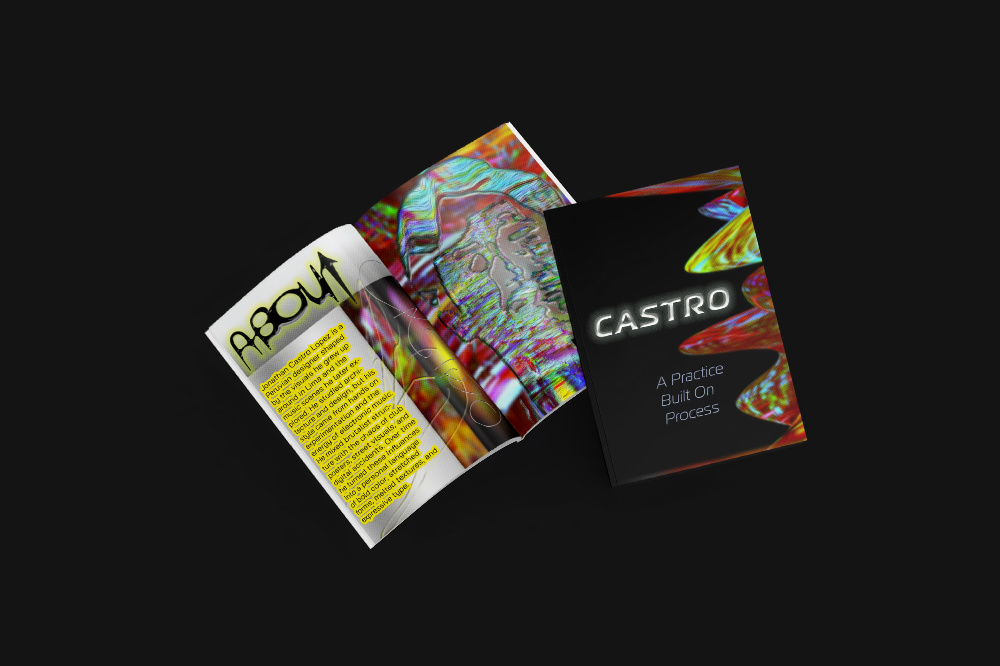
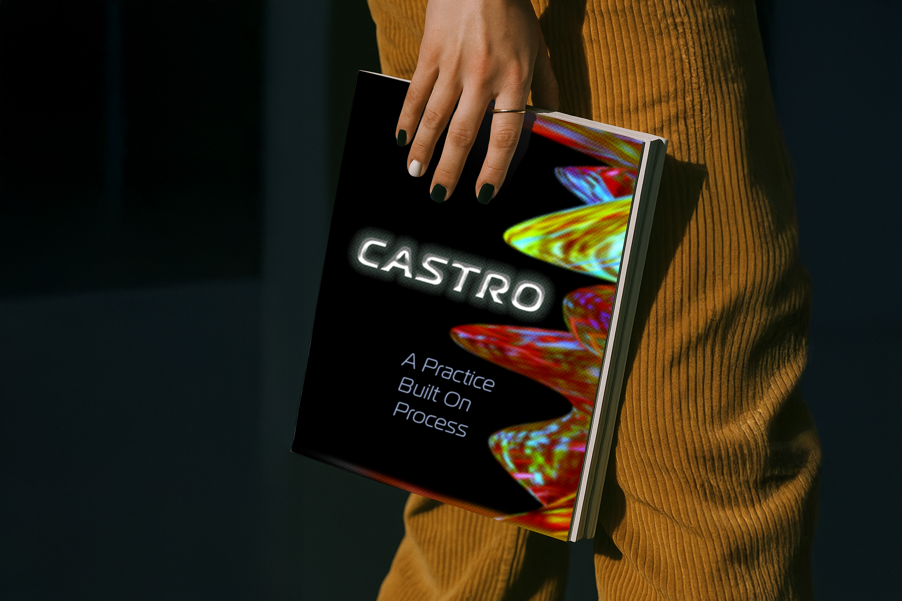
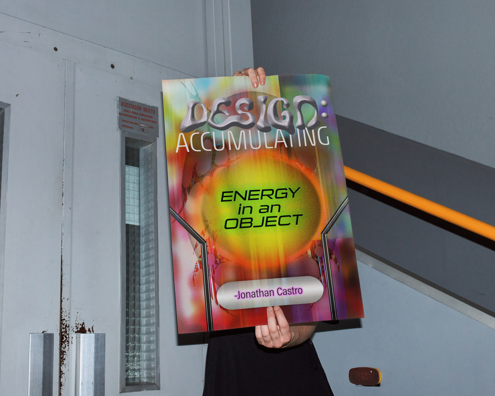

Case Study · Design · 2025
Designer Tribute Zine + Poster
This zine was created for a project researching a contemporary artist and designing a publication inspired by their style. I chose Jonathan Castro because I was drawn to his vibrant colors, chaotic compositions, and the way he draws inspiration from his Latin culture—something I deeply connect with as well.





Concept
The concept centers on Castro's quote: "Design is the accumulation of energy in an object." This resonates with me because my process is about pouring my soul and energy into my work, making each piece feel alive and charged.
Design Approach
The zine explores color, energy, and chaos, channeling Castro's aesthetic approach while infusing my own cultural perspective and background. Bold typography, layered imagery, and saturated color palettes create visual tension throughout the spreads.
The inside poster directly interprets Castro's energy quote through dynamic composition and explosive color relationships, embodying the concept that design holds and radiates the creator's energy.
Result
The final zine successfully captures the spirit of Jonathan Castro's work while maintaining my own voice. The publication feels alive and vibrant, demonstrating how research and cultural connection can inform authentic design work that resonates personally and visually.